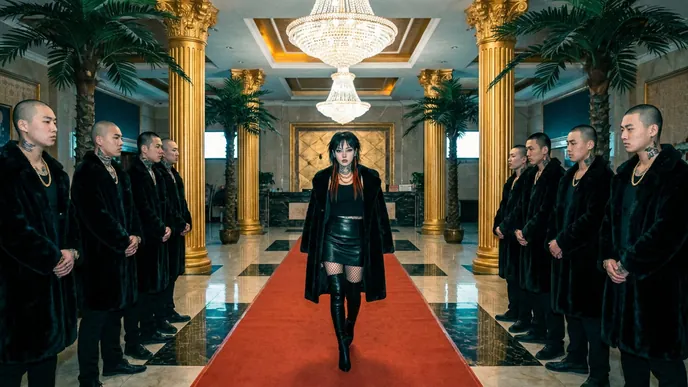
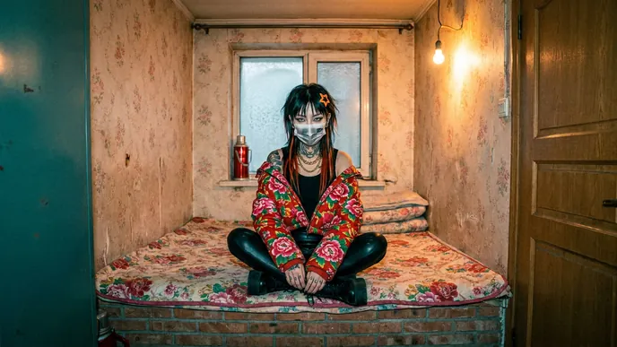
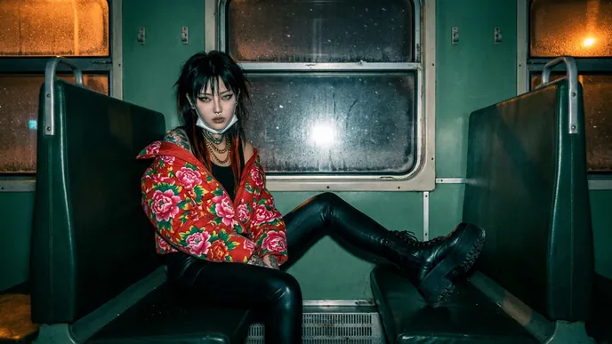
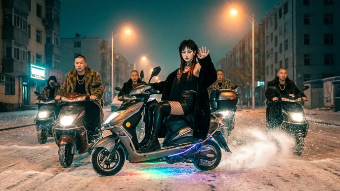
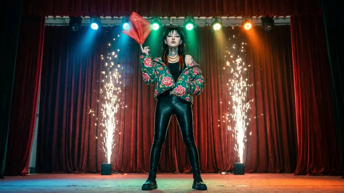
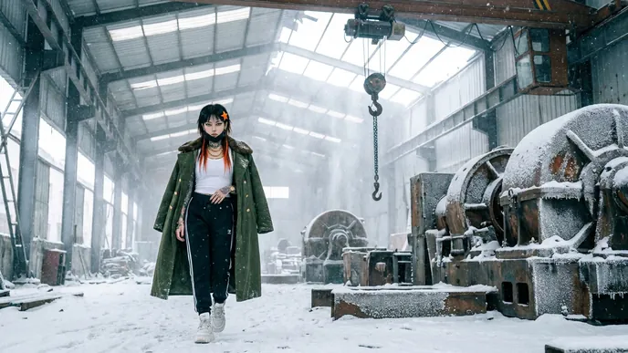
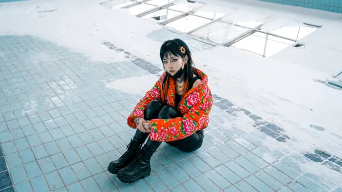
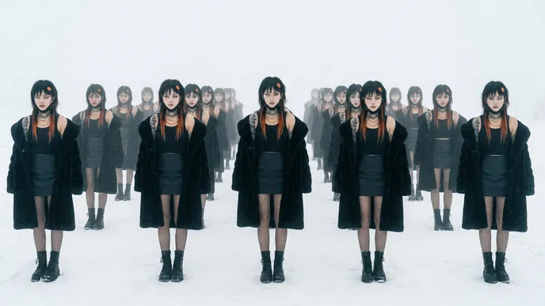

Music video · 2:37 · SS27
精神版 I'm Upping My P(doom)
同一首 P(doom)，這次拍成一場時裝秀：東北精神小妹穿著黑貂、東北大花與軍大衣，走過洗浴中心、雪夜燒烤攤、迪廳和鐵西老廠房，一共 11 套 Look。前半是雪夜，後半是雪地白茫茫。影片本身沒有任何字，Look 卡、吊牌、歌詞、翻牌看板與 P(DOOM) 倒數全部由程式跟著拍點即時疊上去。
Lookbook · SS27
11 套 Look
同一張臉、三套衣服輪著換：黑貂配漁網襪、東北大花棉襖、軍大衣配三條槓運動褲；每個 Look 都配一張吊牌，寫著材質、含金量和當時的 P(DOOM)。
- 黑貂Sparks of AGI：雪夜街頭、眼睛裡的火花、網咖。

洗浴中心The boss：她走紅毯，兩排兄弟同時鞠躬。
東北大花Trapped in the Chinese room：炕頭小屋，門縫塞進一張白紙。
綠皮火車A stable training run：夜車穿過雪地。
鬼火Optimizing, accelerating：彩色燈條拉成長長的光。
二人轉The Omega Point：紅手絹拋上去，冷焰火噴起來。
軍大衣Von Neumann's obsolete：鐵西老廠房，雪從破屋頂落下。- 迴紋針As paperclips fill the room：迴紋針從天而降。

空泳池Orthogonality thesis blues：一格一格正交的藍磁磚。- 織布機Just as foretold by Loom：織布機一起動起來。

複製人Recursive self-upgrade：幾十個她同時轉頭看鏡頭，END OF SHOW。
How it's made
怎麼做出來的
- 先定人物
- 定裝照做了兩輪：第一輪不夠精神小妹，第二輪加滿刺青（龍、錦鯉、牡丹花臂，脖子上一隻東北虎）、黑口罩拉到下巴、大金鏈子。選定一張臉，三套衣服在 11 個 Look 之間換。
- 劇照變影片
- 31 個場景各先用 Leonardo（Nano Banana Pro）生成一張劇照，再交給 Seedance 2.0 從那一格開始拍 5 秒。提示詞要求招牌和螢幕全部留白，畫面裡不放字。
- 東北諧音梗
- Chinese room 是炕頭小屋、training run 是綠皮火車、atoms rearranging 是自動麻將桌洗牌、transformers 是變電站的變壓器、Loom 是織布機、bag of shrooms 是一袋東北榛蘑。
- 時裝秀的 HUD
- 左上 Look 編號、右上翻牌的 P(DOOM) 百分比、左側刻度尺、底部跑馬燈的數字一直跳、臉上的追蹤框、網點與底片顆粒；前半雪夜用白字，後半雪地換成黑字。
- 字全是程式畫的
- 歌詞在左下逐字出現，正在唱的字變橘色（白底段落改成反白）；重點字放大成窄體大字；Look 卡、吊牌（洗標與條碼）、訓練 loss 曲線、終端機、勾選框、高速公路的翻牌看板，最後用馬賽克收尾。